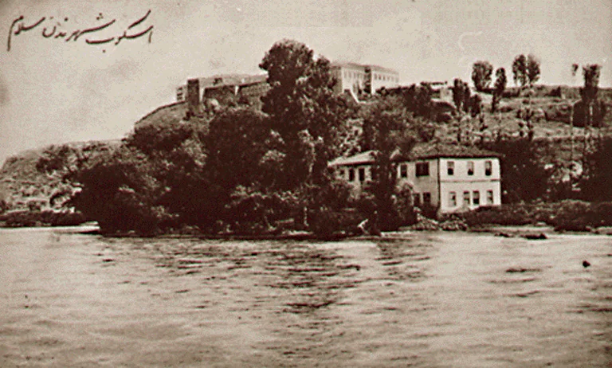
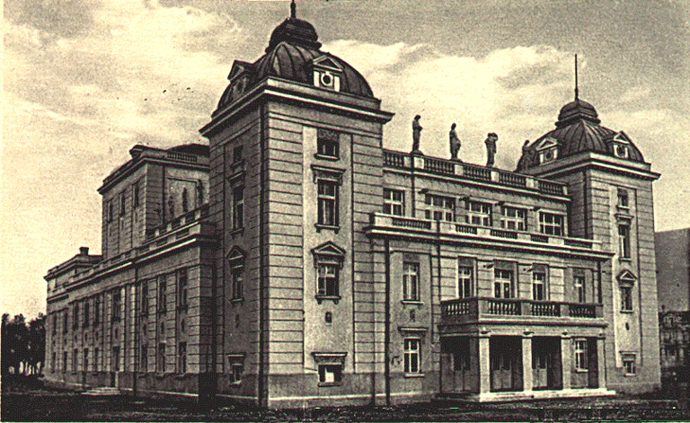
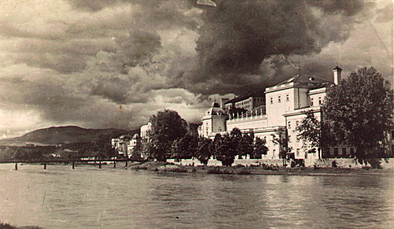
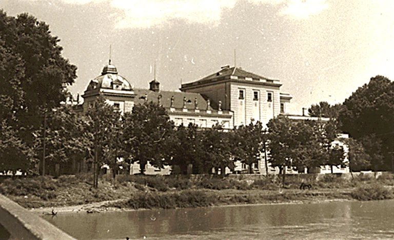
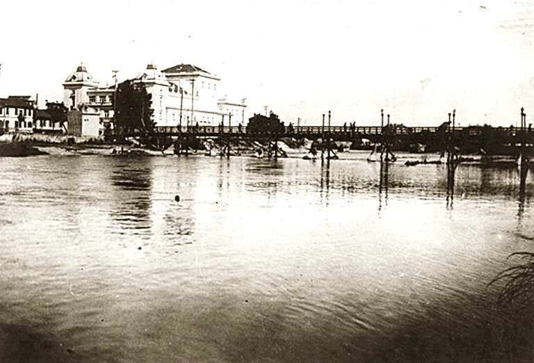
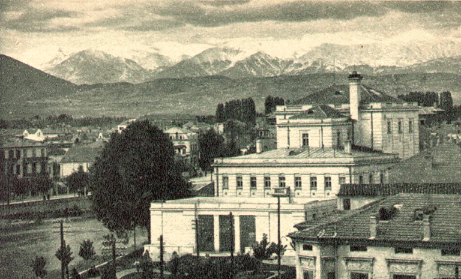
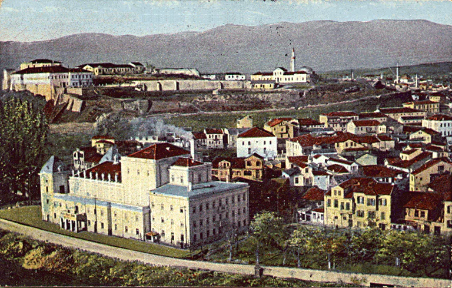

Дескрипција
Старата кафеана "Богес", во која се одржувале првите театарски претстави до почетокот на 20 век. Во 1902 година се гради првиот театар.

Турскиот театар, изграден 1902 година. - почеток на 20 век.

Турскиот театар со дел од Еврејското маало и скопската тврдина - Кале. (почеток на 20 век)

Главен влез на Народниот театар. - 30-тите години На 26 Октомври 1927 година било свеченото отварање. Архитекти: Ј.Буковац, Е Бранштајн, С. Бељаевски, Д.М. Леко, Петар Гочиќ и В.Меснер.

Главен влез на Народниот театар. - 30-тите години

Народен театар со скопската тврдина - Кале. (30-тите години)

Народниот театар. (30-тите години)

Народниот театар - ноќе. (30-тите години)

Поглед кон Народниот театар и дрвеното мовче. (30-тите години)

Народен театар. (30-тите години)

Поглед на Народниот театар од дрвеното мовче. (30-тите години)

Дрвеното мовче и Народниот театар - 30-тите години.

Дрвеното мовче и Народниот театар - 30-тите години.

Народниот театар и дрвениот мост - 30-тите години.

Народен театар - 30-тите години.

Поглед од десната страна на р.Вардар кон Народниот театар и скопската тврдина - Кале - 30-тите години.

Поглед од Источната страна на Народниот театар. Во позадината се масивите на Шар планина - 30-тите години.

Народниот театар и скопската тврдина - Кале - 30-тите години.

Фотографија направена од Официрски дом - околу 1930 година. Прекрасна фотографија на Народниот театар, дрвеното мовче и скопската тврдина - Кале.

Народниот театар со скопската тврдина - Кале - 30-тите години.

Народниот театар, дел од дрвеното мовче, како и дел од новоизградени куќи. Во горниот дел се гледа скопската тврдина - Кале - 30-тите години.

Народниот театар и групација на модерни куќи и куќи од Еврејското маало. На десната страна се гледаат дел од екстравагантните куќи од еврејското маало. Над театарот се гледа скопската тврдина - Кале - 30-тите години.

Народниот театар и Еврејското маало, а над него се издигнува скопската тврдина - Кале - 30-тите години.

Панорамски поглед на Народниот театар, а над него се извишува Калето со касарнските објекти - 30-тите години.

Поглед на Народниот театар од терасата на Офицерскиот дом - 30-тите години.

Поглед на Народниот театар од терасата на Офицерскиот дом - 30-тите години.

Панорамски поглед на Народниот театар, а над него се извишува Калето - 50-тите години.

Народен театар - 50-тите години.
Ориентација

На старата ориентациона карта
Фото албум


Тема
 Аквадукт4 разгледници
Аквадукт4 разгледници Кале30 разгледници
Кале30 разгледници Мостови60 разгледници
Мостови60 разгледници Кеј58 разгледници
Кеј58 разгледници Плоштад46 разгледници
Плоштад46 разгледници Објекти66 разгледници
Објекти66 разгледници Христијански храмови19 разгледници
Христијански храмови19 разгледници Муслимански објекти33 разгледници
Муслимански објекти33 разгледници Офицерски дом29 разгледници
Офицерски дом29 разгледници Театар28 разгледници
Театар28 разгледници Железничка станица13 разгледници
Железничка станица13 разгледници Училишта36 разгледници
Училишта36 разгледници Паркови12 разгледници
Паркови12 разгледници Пазари18 разгледници
Пазари18 разгледници Улици38 разгледници
Улици38 разгледници Панорама I60 разгледници
Панорама I60 разгледници Панорама II30 разгледници
Панорама II30 разгледници Колажи55 разгледници
Колажи55 разгледници Поплави9 разгледници
Поплави9 разгледници Земјотрес27 разгледници
Земјотрес27 разгледници Скопје 200026 разгледници
Скопје 200026 разгледници